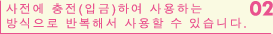
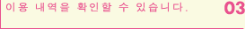
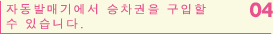
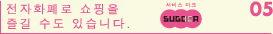
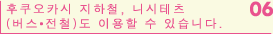
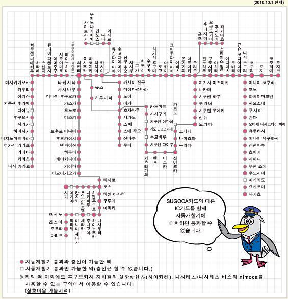

-
자동개찰기의 판독부에 SUGOCA카드를 가볍게 터치하는 것만으로 통과할 수 있습니다. 사전에 승차권을 구입할 필요가 없습니다. 카드 케이스 등에 넣은 채로도 사용할 수 있습니다.
※카드 케이스에 다른 IC카드 또는 전파를 방해하는 물건이 함께 들어 있으면 사용할 수 없습니다.
- 
-
충전(입금)하면, 카드 내의 잔액이 증가하므로, 반복하여 사용할 수 있습니다.
자동발매기, 충전기에서 카드 잔액을 최대 20,000엔까지 충전할 수 있습니다.
- 
-
이용 내역을 자동발매기•충전기에서 확인할 수 있습니다.
이용 내역을 프린트할 수도 있습니다.
- 
- 카드 내의 전액으로 자동발매기에서 승차권과 특급권 등의 표를 구입할 수 있습니다.
- 
-
철도의 이용뿐만 아니라, 위의 서비스 마크가 부착되어 있는 가게에서도 현금처럼 사용할 수 있습니다.
역 내에서 시내로 확장. SUGOCA전자화폐를 사용할 수 있는 가게를 순차적으로 늘리고 있습니다.
- 
- SUGOCA카드 1장으로 후쿠오카시 지하철도, 니시테츠(버스•전철)도 이용할 수 있습니다.

- 위의 구역 외에서는 SUGOCA카드를 사용할 수 없습니다. 내릴 역을 지나쳐 사용 가능 구역 밖으로 벗어나면, SUGOCA카드로 정산 할 수 없습니다.
- 산요 신칸센은 이용할 수 없습니다.
- SUGOCA카드와 다른 승차권을 함께 사용하면 통과할 수 없습니다.
- 사용 가능 구역 내외에 걸친 구간을 이용하거나, 또는 산요 신칸센과 환승할 경우에는 사전에 전구간 승차권을 구입하십시오.
- 하카타 역과 코쿠라 역의 산요 신칸센 환승 개찰구에서는 SUGOCA카드를 사용할 수 없습니다.